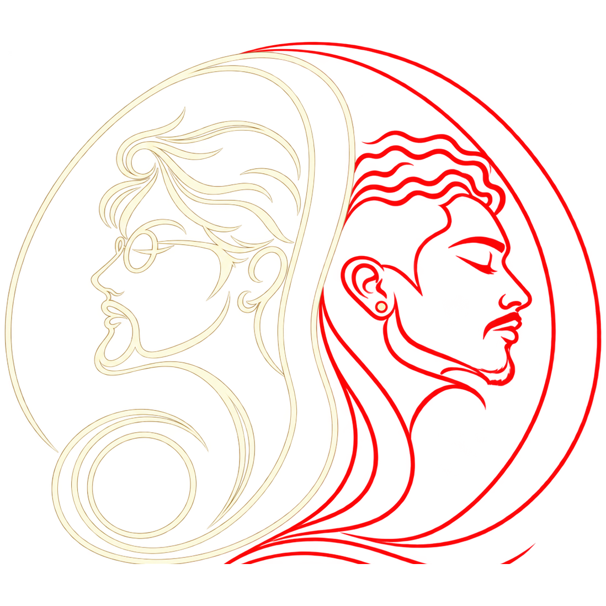
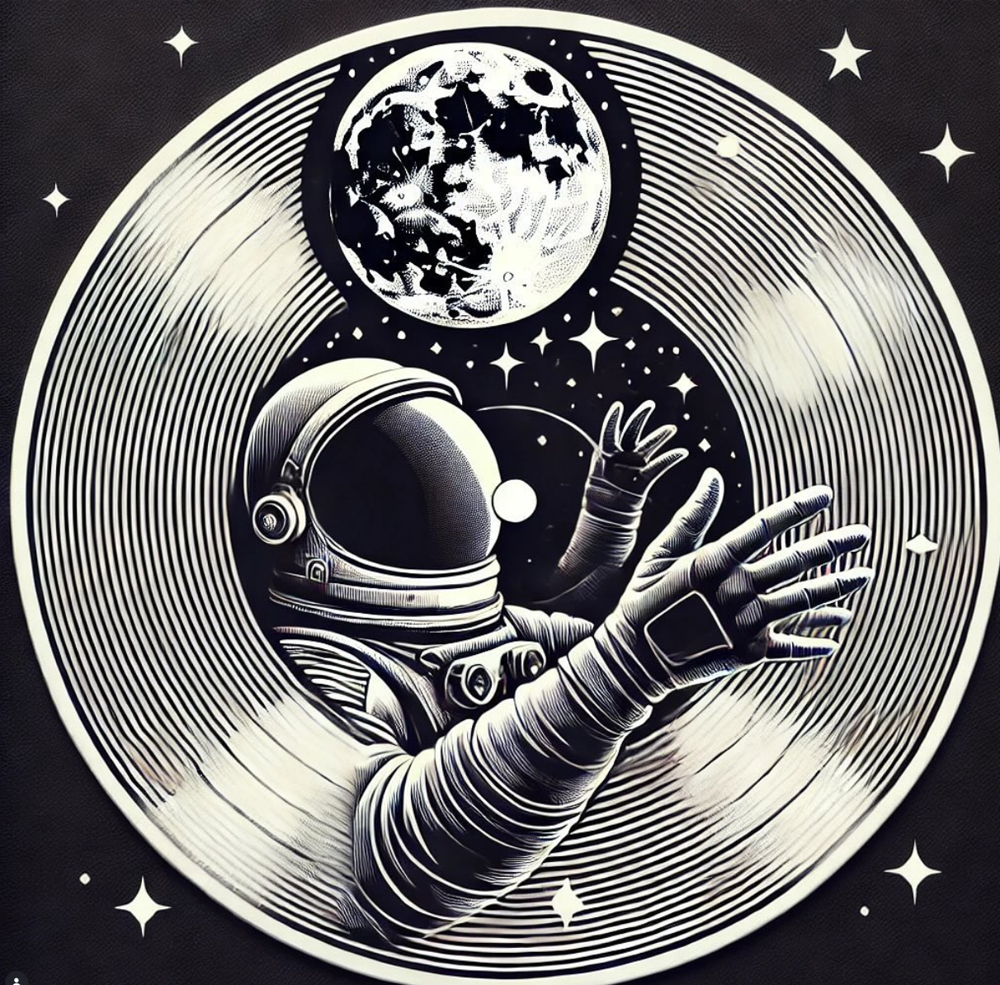

Batallas
Rondas de freestyle y enfrentamientos entre disciplinas, con criterio, energía y respeto por cada lenguaje.

J.D.J.D. PRODUCIONES / BATALLAS DE BAILE
Un proyecto que abre la escena para las distintas expresiones de la danza y las danzas urbanas, dando un espacio de creación, manifestación y competencia que permite mostrar aquello que no se dice, que se baila.
Conocer la propuesta ↓01 / LA PROPUESTA
Skillbattles nace para reunir las expresiones de la danza en un encuentro vivo, diverso e integral. Un espacio donde las crews, bailarines y artistas puedan mostrar su lenguaje, medirse con respeto y compartir con la comunidad.
La pista se convierte en un lugar de escucha: cada batalla abre una conversación y cada cuerpo trae una historia.
02 / LO QUE SUCEDE
Competencia, encuentro y celebración
en una misma experiencia.
Rondas de freestyle y enfrentamientos entre disciplinas, con criterio, energía y respeto por cada lenguaje.
Presentaciones invitadas para ampliar la mirada y compartir trabajos que están moviendo la escena.
La música sigue cuando termina la ronda. Un cierre para bailar, encontrarse y celebrar lo vivido.
Reconocimientos para quienes convierten su estilo y su presencia en una experiencia para todos.
03 / ARCHIVO SKILLBATTLES

04 / PRÓXIMO ENCUENTRO
Si bailas, produces, pinchas música, fotografías o quieres ser parte de la producción, queremos escucharte.
Quiero ser parte ↗